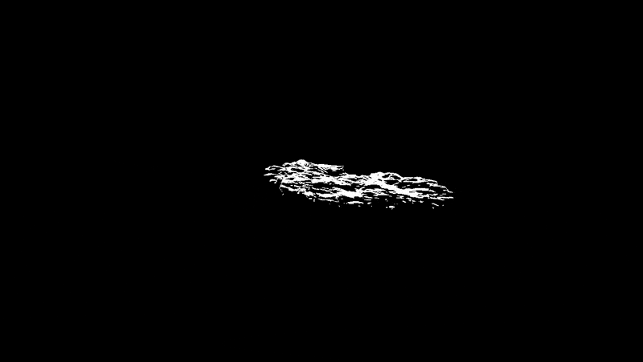

Grant Kendall
- 01. Improvised Landscapes
- 02. Perennial Institute
- 03. Blooms
- 04. Letter Usage
- 05. Dissent/Descent
- 06. Selected Prints
Grant is an artist and designer interested in language and ideas. His work spans many mediums including painting, books and game engines.
He is currently learning how to program and work with the web ethically. This website is hand-coded in HTML. You can view the source code here.

"Improvised Landscapes"2024, staple-bound zine


Created during my last year of undergrad at UMKC, this zine is an exercise in translating layered digital worlds into a printed format. Scenes were composed in game engines and then collaged in layout software. The translucency of vellum paper simulates the leakage of data and attention; context is never focused as windows are rearranged in an operating system. Black ink from an inkjet printer adds a layer of physical compression to the images, flattening and obscuring their context.
Perennial InstituteDesign Ideation


Design mock-ups, sketches and ideas for the Perennial Institute, a creative retreat held in Berlin. The excerpt of work here is primarily concerned with the program's identity and layout for an educational deck of cards.
"Blooms" 2017, staple-bound zine


I learned about the phenomenon of jellyfish blooms while working with a flatbed scanner as a tool for image-making. Manipulating mundane objects during the scanning process yielded images with iridescent artifacts, invoking jellyfish suspended in dark waters. This zine is a collection of the most striking images.
"A visual representation of letter usage"2017, book


This work began by investigating alternative mapping methods and thinking about typography as landmarks. As such, a book could become a container for statistics, data for the sake of measurement. The frequency of letter usage in the English language is expressed both through the number of letters printed and the size of the circles cut in each page. It resides in the permanent Artists' Book Collection at the Minneapolis College of Art and Design Library after winning 1st prize in the 2018 Student Artist's Book Competition.
"Dissent/Descent" 2017, enamel on mirror


Part protest piece, part linguistic exploration. Borrowing the form of crossword puzzles, the work presents a rhetorical question to the viewer; "dissent or descent?" Standing in front of the work, the viewer's head is lost in the black enamel void, creating a temporary lack of identity.
Selected Prints


A selection of prints made during my time as a student in MCAD's Print Paper Book tract. The prints were made using differing methods including silkscreen, stencil and woodblock.